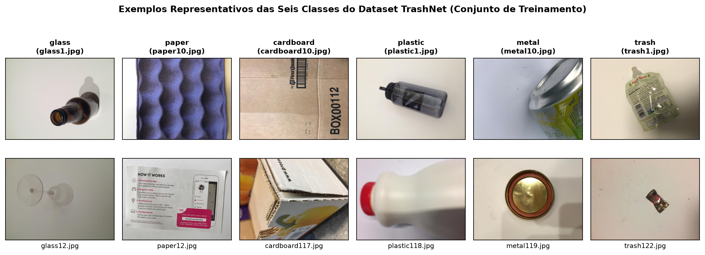
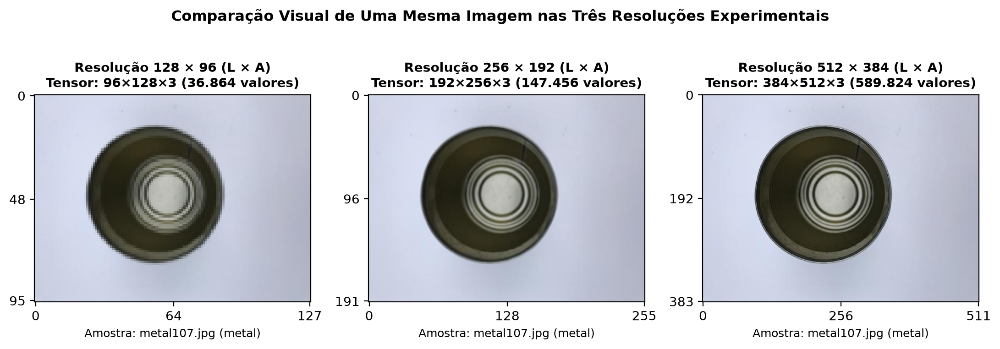
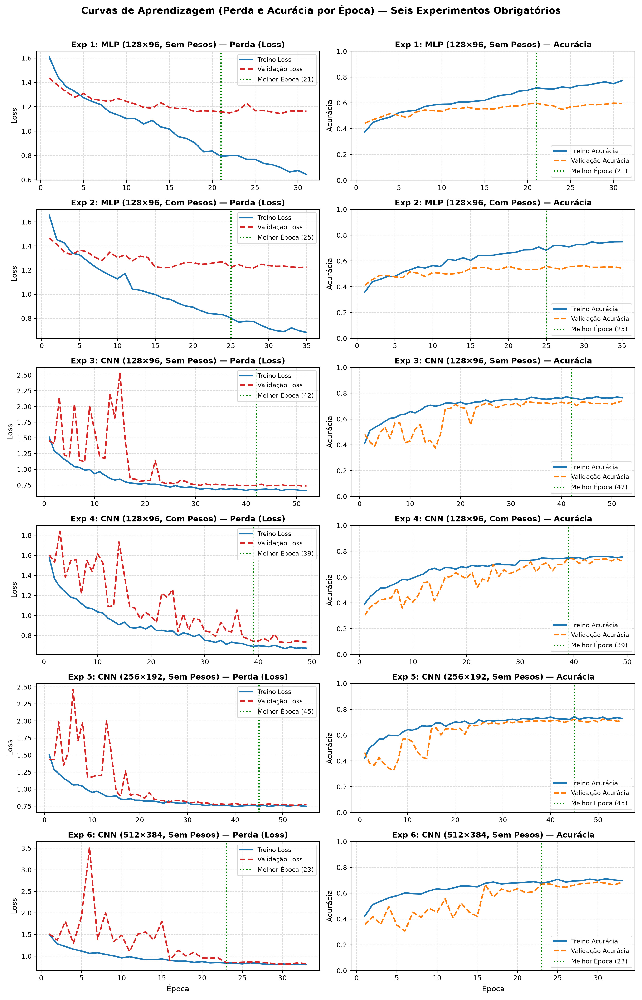
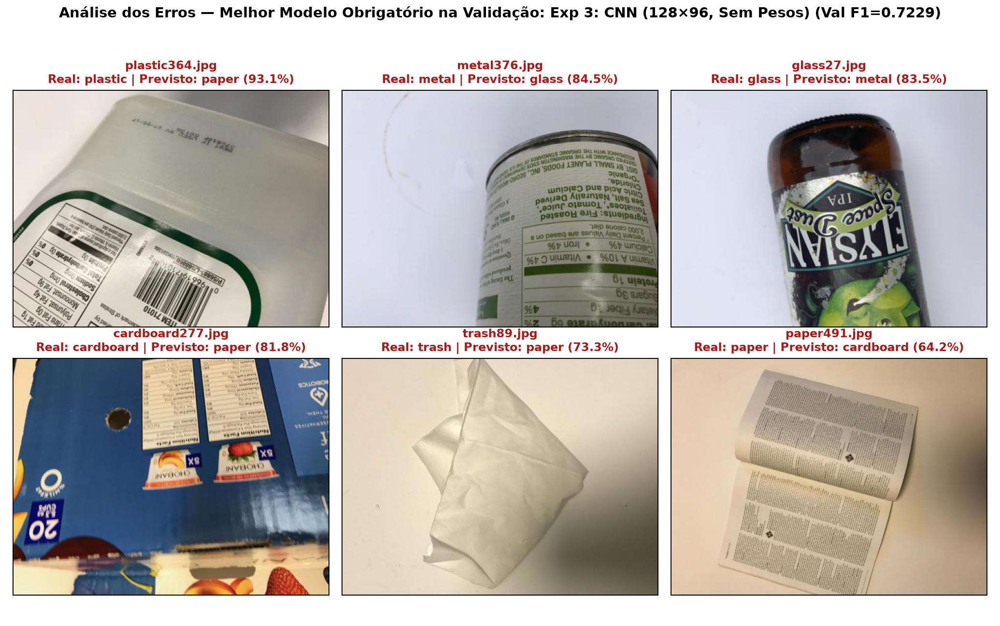

Figura 1 – Distribuição estratificada das seis classes do TrashNet limpo (2.521 imagens; 70% treino, 15% validação, 15% teste)

Fonte: Elaborada pelos autores (2026).
RESUMO: A triagem automatizada de resíduos sólidos recicláveis é um desafio prático de visão computacional devido à variabilidade visual dos materiais e ao desequilíbrio entre categorias. Este trabalho apresenta um estudo experimental controlado com o conjunto de dados TrashNet, após a remoção de 6 amostras pertencentes a 3 pares duplicados via MD5 com rótulos conflitantes, resultando em 2.521 imagens limpas em seis classes (glass, paper, cardboard, plastic, metal e trash), com divisão estratificada fixa (70% treino, 15% validação e 15% teste; semente 42). Foram executados seis experimentos obrigatórios comparando Multilayer Perceptron (MLP) e Rede Neural Convolucional (CNN) com e sem pesos de classe em 128 × 96 pixels, além da avaliação do efeito da resolução na CNN (128 × 96, 256 × 192 e 512 × 384) mantendo 28.358 parâmetros via Global Average Pooling, sob protocolo uniforme (até 60 épocas, parada antecipada com paciência 10 e mesma aumentação de dados geométrica). Como extensão opcional, aplicou-se transferência de aprendizagem com YOLO11n-cls (224 × 224). Nos experimentos obrigatórios, a CNN em 128 × 96 com pesos obteve o maior F1 macro de validação (0,7277), atingindo 73,09% de acurácia e 0,7036 de F1 macro no teste, além de elevar o recall da classe minoritária trash de 0,45 para 0,60; já a CNN sem pesos em 128 × 96 e 256 × 192 alcançou 74,67% de acurácia no teste (F1 macro de 0,7154 e 0,7213), superando amplamente a MLP (34,83% e 0,2275, com 9,47 milhões de parâmetros). O aumento de resolução para 512 × 384 elevou o custo temporal por época em cerca de 22,8 vezes sem melhoria de desempenho (70,98%). Por fim, o YOLO11n-cls atingiu 91,03% de acurácia e 0,8865 de F1 macro no mesmo conjunto de teste, indicando o impacto do pré-treinamento em larga escala.
Palavras-chave: Redes Neurais Artificiais. Visão Computacional. TrashNet. Classificação de Resíduos. Transferência de Aprendizagem.
O gerenciamento eficiente de resíduos sólidos urbanos depende diretamente da correta segregação dos materiais recicláveis. No entanto, a triagem manual está sujeita a erros humanos, fadiga e riscos ocupacionais. Nesse contexto, técnicas de aprendizado profundo (Deep Learning) e Redes Neurais Artificiais (RNAs) aplicadas à visão computacional e ao reconhecimento de padrões oferecem uma alternativa promissora para identificar automaticamente materiais como vidro, papel, papelão, plástico e metal a partir de imagens digitais (BISHOP; NASRABADI, 2006; GOODFELLOW et al., 2016).
Conforme os fundamentos estudados na disciplina (BARBOSA, 2025), arquiteturas do tipo Multilayer Perceptron (MLP) empregam camadas totalmente conectadas e fluxo feedforward com funções de ativação suaves e diferenciáveis para aprender mapeamentos não lineares por meio do algoritmo de retropropagação do erro (backpropagation), superando as limitações de separabilidade linear do Perceptron Simples e do ADALINE (RUMELHART; HINTON; WILLIAMS, 1986; HAYKIN, 2001; SILVA; SPATTI; FLAUZINO, 2010). Contudo, ao vetorizar imagens RGB diretamente na entrada, a MLP perde a relação geométrica de vizinhança espacial e sofre crescimento excessivo de parâmetros na primeira camada. Em contrapartida, no paradigma de Deep Learning, as Redes Neurais Convolucionais (CNNs) preservam a entrada matricial e realizam extração e seleção de características na 1ª região por filtros compartilhados e subamostragem (pooling), aprendendo mapas hierárquicos de bordas, cantos e contornos antes da etapa de decisão (ZEILER; FERGUS, 2014; GOODFELLOW et al., 2016; BARBOSA, 2025).
O objetivo deste estudo é investigar empiricamente o desempenho, o custo de treinamento e o tempo de inferência de modelos MLP e CNN na classificação das seis classes do conjunto de dados TrashNet (YANG; THUNG, 2016). Especificamente, avaliam-se: (i) a diferença arquitetural entre MLP e CNN em 128 × 96 pixels; (ii) o efeito da ponderação de classes na função de perda sobre a classe minoritária trash; (iii) o custo-benefício do aumento de resolução espacial (128 × 96, 256 × 192 e 512 × 384) na CNN; e (iv) como objetivo extra opcional, os ganhos obtidos por transferência de aprendizagem com a arquitetura YOLO11n-cls.
Utilizou-se como base o arquivo oficial dataset-resized.zip do TrashNet, composto originalmente por 2.527 imagens coloridas no formato RGB com dimensão padrão de 512 × 384 pixels (largura × altura). A inspeção automatizada de integridade confirmou zero arquivos corrompidos e 100% das amostras no modo RGB. Entretanto, a verificação por assinatura criptográfica (MD5) revelou três pares de arquivos idênticos rotulados em categorias distintas: plastic152.jpg/glass176.jpg, plastic332.jpg/glass389.jpg e metal91.jpg/glass115.jpg. Para evitar contaminação e ruído de avaliação entre subconjuntos, todos os 6 arquivos pertencentes a esses pares conflitantes foram removidos antes da divisão dos dados, resultando em um conjunto limpo de 2.521 imagens distribuídas em seis classes: glass (498), paper (594), cardboard (403), plastic (480), metal (409) e trash (137).
Visualmente, as fotografias do TrashNet foram capturadas em ambiente controlado sobre fundo claro uniforme, com iluminação variável e objetos individuais frequentemente amassados, translúcidos (vidro e plástico) ou com reflexos metálicos (metal e vidro), o que dificulta a discriminação apenas por cor global. A Figura 1 exibe a distribuição estratificada após a limpeza e a Figura 2 apresenta exemplos representativos das seis classes.

Para garantir reprodutibilidade e impedir vazamento de dados (data leakage), aplicou-se divisão estratificada fixa com semente 42 sobre as 2.521 imagens limpas: 1.764 imagens (70%) para treinamento, 378 (15%) para validação e 379 (15%) para teste, mantendo em todos os subconjuntos a proporção original de ~5,43% da classe trash (96, 21 e 20 imagens, respectivamente). As imagens foram convertidas para RGB, redimensionadas por interpolação bilinear a partir da referência 512 × 384 para 128 × 96 e 256 × 192 (Figura 3) e normalizadas para o intervalo [0, 1] mediante divisão por 255. Para referência estatística exclusiva do treinamento, registraram-se médias RGB de [0,6727; 0,6397; 0,6047] e desvios padrão de [0,1837; 0,1828; 0,1934]. Para manter comparação justa entre arquiteturas, aplicou-se exatamente a mesma aumentação de dados geométrica leve (espelhamento horizontal com p = 0,5 e rotação aleatória de ±10° com p = 0,5) tanto para a MLP quanto para as CNNs, exclusivamente durante o treinamento.
metal107.jpg nas três resoluções experimentais (L × A)
Distinguindo arquitetura (fluxo macroscópico do sinal) de topologia (hiperparâmetros internos definidos pelo projetista), todos os modelos obrigatórios foram implementados em PyTorch (PASZKE et al., 2019) e treinados do zero em modo offline por mini-lotes (batch size = 32) com semente fixa (42), limite uniforme de 60 épocas, otimizador Adam (taxa de aprendizagem inicial lr = 10−3, decaimento de pesos 10−4, escalonador ReduceLROnPlateau com fator 0,5 e paciência 3), função de perda Entropia Cruzada (CrossEntropyLoss) e ativação ReLU (g(u) = max(0, u)) nas camadas intermediárias — escolhida para evitar operações exponenciais e reduzir a saturação das funções sigmoidais. Adotou-se Parada Antecipada (Early Stopping) uniforme com paciência de 10 épocas nos seis experimentos obrigatórios, monitorando o F1 macro de validação e restaurando os pesos da melhor época antes da avaliação única no conjunto de teste (BARBOSA, 2025).
AdaptiveAvgPool2d(1)); e (2) Decisão — vetorização (Flatten) seguida de MLP densa (64 neurônios ReLU + Dropout 0,20 + 6 saídas), mantendo exatamente 28.358 parâmetros nas três resoluções.Objetivo Extra (YOLO11n-cls): Aplicou-se transferência de aprendizagem com o modelo yolo11n-cls.pt (Ultralytics 8.4.216, pré-treinado no ImageNet-1K, 1.538.790 parâmetros) no modo classify (JOCHER; CHAURASIA; QIU, 2024), preservando exatamente os mesmos diretórios de treino, validação e teste da semente 42 sobre as 2.521 imagens limpas. O ajuste fino ocorreu em 224 × 224 pixels por 20 épocas com otimizador AdamW (lr0 = 0,001, lote 32) e aumentação padrão do YOLO classify apenas no treino.
Hardware e Medição de Custo: Os experimentos foram disparados remotamente a partir da estação Linux local e executados em CPU Intel(R) Core(TM) i7-4850HQ CPU @ 2.30GHz (16,0 GB de RAM, sistema operacional Darwin 20.6.0 / macOS, Python 3.11.18 e PyTorch 2.2.2), sem GPU CUDA disponível. Registrou-se o pico de memória RAM (RSS) via biblioteca psutil, cronometrou-se exclusivamente o laço de treinamento e validação por época via time.perf_counter() (excluindo download, leitura de disco e redimensionamento prévio) e mediu-se o tempo médio de inferência por imagem (ms/img) sobre todas as 379 amostras do conjunto de teste na mesma CPU.
A Tabela 1 consolida as métricas de desempenho (validação e teste), o custo de treinamento e a latência média de inferência por imagem dos seis experimentos obrigatórios e do experimento bônus com YOLO11n-cls. A Tabela 2 detalha precisão, recall, F1 e suporte por classe no conjunto de teste limpo (379 amostras), utilizando zero_division=0 quando uma classe não recebe nenhuma predição.
| Experimento | Res. (L×A) | Pesos | Parâm. | Tam. (MB) | Ép. (Mel/Tot) | T. Tot. (s) | T/Ép. (s) | Inf. (ms/img) | RAM (MB) | Val F1 Macro | Teste Acc | Teste F1 Macro |
|---|---|---|---|---|---|---|---|---|---|---|---|---|
| Exp 1: MLP | 128×96 | Não | 9.471.110 | 36,13 | 2 / 12 | 70,97 | 5,91 | 0,24 | 963,0 | 0,2000 | 34,83% | 0,2275 |
| Exp 2: MLP | 128×96 | Sim | 9.471.110 | 36,13 | 1 / 11 | 64,91 | 5,90 | 0,23 | 963,7 | 0,0785 | 25,86% | 0,1100 |
| Exp 3: CNN | 128×96 | Não | 28.358 | 0,12 | 42 / 52 | 213,74 | 4,11 | 0,62 | 846,0 | 0,7059 | 74,67% | 0,7154 |
| Exp 4: CNN (Melhor Val) | 128×96 | Sim | 28.358 | 0,12 | 39 / 49 | 200,80 | 4,10 | 0,82 | 675,1 | 0,7277 | 73,09% | 0,7036 |
| Exp 5: CNN | 256×192 | Não | 28.358 | 0,12 | 45 / 55 | 1.206,65 | 21,94 | 3,74 | 2.112,3 | 0,6764 | 74,67% | 0,7213 |
| Exp 6: CNN | 512×384 | Não | 28.358 | 0,12 | 23 / 33 | 3.088,45 | 93,59 | 18,07 | 6.439,6 | 0,6212 | 70,98% | 0,6582 |
| Exp 7 (Bônus): YOLO11n-cls | 224×224 | Pré-treinado | 1.538.790 | 3,05 | 20 / 20 | 2.462,58 | 123,13 | 16,70 | 454,4 | 0,9233* | 91,03% | 0,8865 |
zero_division=0)| Experimento | glass (sup=75) P / R / F1 |
paper (sup=89) P / R / F1 |
cardboard (sup=61) P / R / F1 |
plastic (sup=72) P / R / F1 |
metal (sup=62) P / R / F1 |
trash (sup=20) P / R / F1 |
|---|---|---|---|---|---|---|
| Exp 1: MLP (128×96) | 0,50 / 0,01 / 0,03 | 0,28 / 0,97 / 0,44 | 0,92 / 0,38 / 0,53 | 0,46 / 0,31 / 0,37 | 0,00 / 0,00 / 0,00 | 0,00 / 0,00 / 0,00 |
| Exp 2: MLP (128×96, Pesos) | 0,00 / 0,00 / 0,00 | 0,24 / 1,00 / 0,39 | 1,00 / 0,08 / 0,15 | 0,25 / 0,01 / 0,03 | 0,75 / 0,05 / 0,09 | 0,00 / 0,00 / 0,00 |
| Exp 3: CNN (128×96) | 0,65 / 0,85 / 0,74 | 0,76 / 0,88 / 0,82 | 0,91 / 0,85 / 0,88 | 0,72 / 0,58 / 0,65 | 0,76 / 0,61 / 0,68 | 0,64 / 0,45 / 0,53 |
| Exp 4: CNN (128×96, Pesos) | 0,66 / 0,81 / 0,73 | 0,80 / 0,80 / 0,80 | 0,93 / 0,82 / 0,87 | 0,69 / 0,61 / 0,65 | 0,78 / 0,63 / 0,70 | 0,40 / 0,60 / 0,48 |
| Exp 5: CNN (256×192) | 0,61 / 0,80 / 0,69 | 0,80 / 0,84 / 0,82 | 0,93 / 0,89 / 0,91 | 0,71 / 0,65 / 0,68 | 0,74 / 0,63 / 0,68 | 0,89 / 0,40 / 0,55 |
| Exp 6: CNN (512×384) | 0,60 / 0,79 / 0,68 | 0,67 / 0,91 / 0,77 | 0,87 / 0,87 / 0,87 | 0,70 / 0,60 / 0,65 | 0,88 / 0,45 / 0,60 | 0,83 / 0,25 / 0,38 |
| Exp 7: YOLO11n-cls (Bônus) | 0,95 / 0,95 / 0,95 | 0,93 / 0,90 / 0,91 | 0,98 / 0,93 / 0,96 | 0,89 / 0,89 / 0,89 | 0,89 / 0,94 / 0,91 | 0,65 / 0,75 / 0,70 |
As curvas de perda e acurácia por época dos seis experimentos obrigatórios são exibidas na Figura 4, evidenciando a estabilidade de convergência das CNNs ao longo de 33 a 55 épocas frente à estagnação precoce das MLPs logo nas primeiras iterações. Na Figura 5, apresentam-se as matrizes de confusão no conjunto de teste com contagens absolutas e porcentagens por linha na ordem canônica das classes.


A Figura 6 ilustra o efeito do aumento de resolução na CNN sem pesos de classe (Experimentos 3, 5 e 6), contrapondo acurácia e F1 macro de teste ao tempo médio por época e ao tempo total de treinamento. Na Figura 7, realiza-se a análise qualitativa dos erros do modelo obrigatório de maior F1 macro na validação (Exp 4: CNN 128 × 96 com pesos, Val F1 Macro = 0,7277), exibindo os seis erros de maior confiança dentre os 102 erros no teste (277 acertos em 379 imagens).


Por fim, a Figura 8 apresenta as curvas de perda e acurácia na validação e a matriz de confusão no mesmo conjunto de teste limpo para o objetivo extra com YOLO11n-cls, que alcançou 91,03% de acurácia global (345 acertos e 34 erros em 379 amostras) e 0,8865 de F1 macro.

A comparação controlada em 128 × 96 pixels, sob o mesmo limite de épocas, mesma paciência e mesma aumentação de dados, evidencia uma vantagem expressiva das CNNs sobre as MLPs na classificação visual. A MLP (Exp 1) possui 9.471.110 parâmetros (36,13 MB), pois conecta cada um dos 36.864 valores RGB da imagem achatada aos neurônios ocultos, perdendo a vizinhança espacial. Como consequência, a MLP estagnou logo no início (Early Stopping na época 12, melhor época 2), obtendo 34,83% de acurácia e 0,2275 de F1 macro no teste, com colapso completo (F1 = 0,00 via zero_division=0) em metal e trash e forte viés para paper (recall 0,97 com precisão de apenas 0,28).
Em contraste, a CNN (Exp 3) utilizou apenas 28.358 parâmetros (334 vezes menor e 0,12 MB em disco) graças ao compartilhamento de filtros convolucionais e ao Global Average Pooling, alcançando 74,67% de acurácia e 0,7154 de F1 macro no teste. As curvas da Figura 4 mostram que, enquanto a MLP não consegue evoluir após as duas primeiras épocas mesmo com aumentação geométrica, a CNN reduz de forma consistente a perda de treino e validação até a época 42 (parando na 52), sem sobreajuste acentuado, o que sugere boa combinação entre extração espacial, BatchNorm, Dropout e aumentação leve.
A introdução de pesos inversamente proporcionais à frequência (com destaque para wtrash = 3,0625 frente a wpaper = 0,7067) produziu efeitos distintos nas duas arquiteturas. Na MLP (Exp 2), o desbalanceamento ponderado instabilizou o treinamento logo na época 1 (parada na 11), levando a acurácia global para 25,86% (F1 macro 0,1100), com recall nulo para glass e trash.
Na CNN (Exp 4), porém, a ponderação cumpriu o objetivo de priorizar a classe rara: o recall de trash subiu de 0,45 (Exp 3, 9 de 20 acertos) para 0,60 (12 de 20 amostras corretas) e o F1 macro de validação atingiu o maior valor entre os obrigatórios (0,7277). Por outro lado, o aumento de falsos positivos previstos como trash reduziu a precisão dessa classe de 0,64 para 0,40 (F1 de trash de 0,53 para 0,48), resultando no teste em 73,09% de acurácia e 0,7036 de F1 macro frente a 74,67% e 0,7154 do Exp 3. Trata-se do compromisso esperado (trade-off) entre sensibilidade e precisão em categorias minoritárias.
Graças ao Global Average Pooling, o número de parâmetros permaneceu idêntico (28.358) nas resoluções 128 × 96, 256 × 192 e 512 × 384. Entretanto, o custo computacional cresceu fortemente: o tempo médio por época subiu de 4,11 s (128 × 96) para 21,94 s (256 × 192, ~5,3×) e 93,59 s (512 × 384, ~22,8×), enquanto o tempo total passou de 213,74 s para 1.206,65 s e 3.088,45 s (~51,5 minutos), e o pico de RAM saltou de 846,0 MB para 2.112,3 MB e 6.439,6 MB (~6,4 GB). Em termos de desempenho no teste, 256 × 192 alcançou exatamente a mesma acurácia de 128 × 96 (74,67%) com F1 macro ligeiramente maior (0,7213 contra 0,7154), diferença prática modesta sem teste formal de significância. Já em 512 × 384 (Exp 6), mesmo com limite ampliado para 60 épocas e paciência 10 (melhor época 23/33), a rede obteve resultado inferior: 70,98% de acurácia, 0,6582 de F1 macro e queda no recall de trash (0,25) e metal (0,45).
Esse comportamento sugere limitação de campo receptivo efetivo: mantendo fixos os três blocos convolucionais e filtros 3×3, uma imagem quatro vezes maior em cada eixo faz com que cada filtro observe uma fração 16 vezes menor da área do objeto, capturando texturas locais finas em vez do contorno global. Assim, imagens maiores não trouxeram vantagem que justificasse o aumento de tempo e memória nesta topologia fixa. As medições diretas na CPU também confirmam a diferença entre treino e uso prático: após o treinamento, a inferência no teste levou apenas 0,62 ms/imagem em 128 × 96 e 3,74 ms/imagem em 256 × 192 (subindo para 18,07 ms/imagem em 512 × 384) usando um modelo de apenas 0,12 MB.
Na análise de erros do Exp 4 (Figura 7) e nas matrizes de confusão (Figura 5), as maiores confusões ocorreram entre glass, plastic e metal (por exemplo, glass270.jpg previsto como plastic com 97,9% e metal37.jpg como plastic com 93,9%) devido a transparência, brilho especular e reflexos semelhantes; e entre embalagens e rótulos impressos com fundo claro (como trash91.jpg previsto como paper com 95,7%, cardboard33.jpg como plastic com 89,3%, paper31.jpg como plastic com 83,2% e plastic364.jpg como paper com 82,2%). Além da remoção prévia dos três pares duplicados conflitantes aplicada neste trabalho, limitações estruturais do dataset — fundo claro homogêneo, objeto único centralizado e iluminação controlada — restringem a generalização direta para esteiras industriais ou fotografias reais ao ar livre.
Na comparação com o estudo original de Yang e Thung (2016), que relataram 63% de acurácia com SVM em seis classes e 22% com CNN em cinco classes (excluindo trash por desequilíbrio), e com a continuação posterior documentada no repositório oficial do TrashNet (~75% com CNN), nossas CNNs treinadas do zero em 128 × 96 e 256 × 192 (74,67% no conjunto limpo) atingiram patamar muito próximo ao da continuação do repositório e bem acima da CNN inicial do estudo original. Ressalta-se, porém, que os valores não são diretamente comparáveis como experimentos idênticos, pois diferem na inclusão permanente da classe trash, na remoção dos 6 arquivos duplicados conflitantes, na divisão estratificada fixa (70/15/15), na resolução e no uso de BatchNorm e Global Average Pooling.
Ao comparar as melhores CNNs obrigatórias no teste (Exp 3 e Exp 5: 74,67% Acc; Exp 4: 73,09% Acc) com o modelo YOLO11n-cls (Exp 7: 91,03% Acc; 0,8865 F1 macro), observa-se um ganho de +16,36 pontos percentuais em acurácia sobre Exp 3/5 (+17,94 p.p. sobre Exp 4) e redução dos erros no teste para apenas 34 em 379 imagens, com recall de 0,75 na classe minoritária trash (15 de 20 acertos) e F1 acima de 0,88 em todas as classes recicláveis principais. Esse desempenho ilustra bem os ganhos esperados de Transfer Learning e Fine-Tuning: (i) a base pré-treinada no ImageNet-1K fornece extratores visuais gerais de bordas, texturas e reflexos (YOSINSKI et al., 2014); (ii) a arquitetura moderna com blocos C3k2 (1,54M parâmetros) possui maior capacidade de representação; e (iii) a resolução 224 × 224 combinada à aumentação padrão do Ultralytics favorece a generalização (JOCHER; CHAURASIA; QIU, 2024). O custo foi o tempo de ajuste fino em CPU (2.462,58 s, ~41 min), mantendo latência de inferência medida em 16,70 ms/imagem na mesma CPU.
Os experimentos realizados indicaram que, para a classificação de imagens de resíduos no TrashNet limpo (2.521 imagens), as CNNs alcançam desempenho muito superior ao das MLPs usando menos de 0,3% da quantidade de parâmetros (28.358 contra 9,47 milhões), que o uso de pesos de classe eleva a sensibilidade da classe minoritária trash na CNN (recall de 0,45 para 0,60, ao custo de menor precisão), e que o aumento de resolução para 512 × 384 sem aprofundamento arquitetural não melhora a acurácia no teste (70,98% vs. 74,67%) enquanto multiplica por ~22,8 vezes o tempo por época e exige ~6,4 GB de RAM. O objetivo extra com YOLO11n-cls mostrou que a transferência de aprendizagem é uma alternativa muito efetiva para bases pequenas e desbalanceadas, atingindo 91,03% de acurácia e 0,8865 de F1 macro com 16,70 ms/imagem na CPU avaliada. Como trabalhos futuros, sugerem-se a avaliação de arquiteturas CNN mais profundas em resoluções maiores, busca sistemática de hiperparâmetros com validação cruzada e testes em cenários reais com fundos complexos e múltiplos objetos.
BARBOSA, Paulo Cirillo Souza. Redes Neurais Artificiais: Percursos de Aprendizagem 1 a 4. Fortaleza: Universidade de Fortaleza (EAD Unifor), 2025.
BISHOP, Christopher M.; NASRABADI, Nasser M. Pattern recognition and machine learning. New York: Springer, 2006.
GOODFELLOW, Ian; BENGIO, Yoshua; COURVILLE, Aaron. Deep learning. Cambridge: MIT Press, 2016.
HAYKIN, Simon. Redes neurais: princípios e prática. 2. ed. Porto Alegre: Bookman, 2001.
JOCHER, Glenn; CHAURASIA, Ayush; QIU, Jing. Ultralytics YOLO11: Classification documentation. 2024. Disponível em: https://docs.ultralytics.com/tasks/classify/. Acesso em: 22 nov. 2026.
PASZKE, Adam et al. PyTorch: An imperative style, high-performance deep learning library. In: Advances in Neural Information Processing Systems (NeurIPS), v. 32, 2019.
RUMELHART, David E.; HINTON, Geoffrey E.; WILLIAMS, Ronald J. Learning representations by back-propagating errors. Nature, v. 323, p. 533-536, 1986.
SILVA, Ivan Nunes da; SPATTI, Danilo Hernane; FLAUZINO, Rogério Andrade. Redes neurais artificiais para engenharia e ciências aplicadas. São Paulo: Artliber, 2010.
YANG, Mindy; THUNG, Gary. Classification of trash for recyclability status. Stanford University: CS229 Project Report, 2016. Repositório e dataset disponíveis em: https://github.com/garythung/trashnet. Acesso em: 22 nov. 2026.
YOSINSKI, Jason et al. How transferable are features in deep neural networks? In: Advances in Neural Information Processing Systems (NeurIPS), v. 27, 2014.
ZEILER, Matthew D.; FERGUS, Rob. Visualizing and understanding convolutional networks. In: Computer Vision – ECCV 2014. Cham: Springer, 2014. p. 818-833.